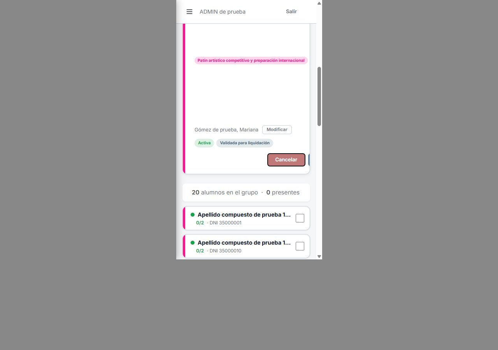
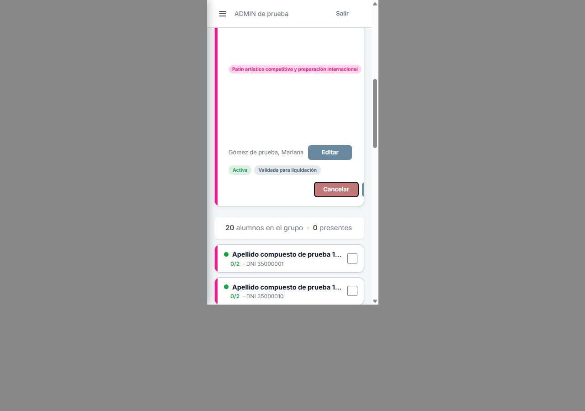
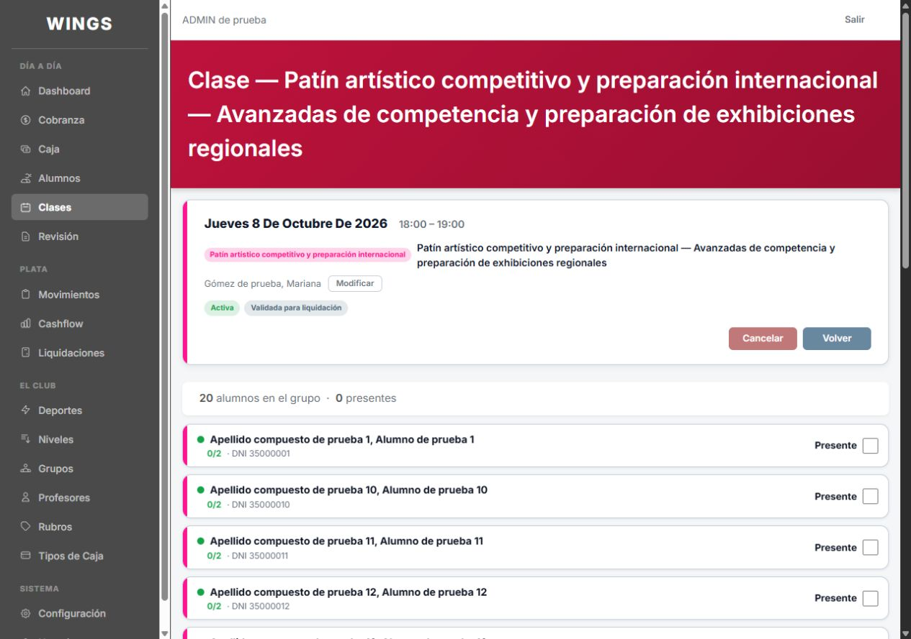
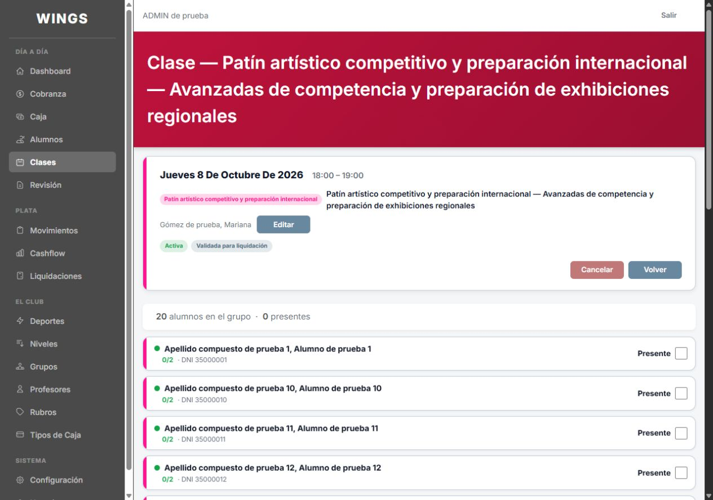
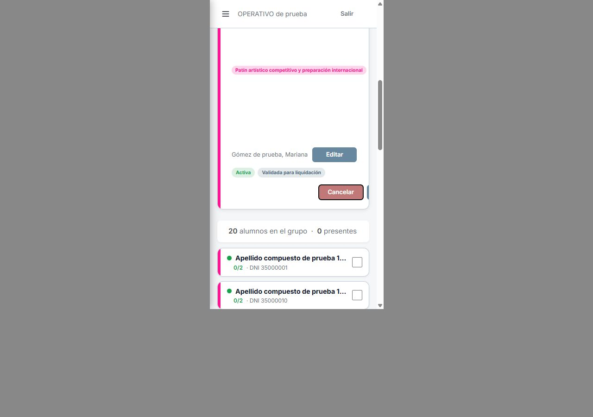

A6 · El botón de la ficha de Clase
07/10/2026. Capturas del sistema funcionando, base de prueba Codex, con 20 alumnos y nombres largos.
Primera propuesta DESCARTADA por Carlos. Conservaba el botón junto al nombre del profesor. Carlos indicó: «No vamos a poner un boton ahi». Se conserva como antecedente, no como opción vigente.
Celular · ADMIN · Marco de 375 × 667




El visor muestra el marco dentro de la captura original de 1280 × 900; no reconstruye la pantalla. El desplazamiento pone a la vista la zona del botón.
Escritorio · ADMIN


OPERATIVO · Mismo cambio

OPERATIVO antes · escritorio · OPERATIVO después · escritorio


Controles
PROFESOR conserva el acceso a asistencia y no recibe este botón: 375 · escritorio.


Login de control del marco. Al pulsar Editar en el DESPUÉS se abrió el panel real «Profesores asignados a esta clase».

Solo cambia resources/views/clases/show.blade.php. No cambia CSS, componentes, permisos ni nombres internos. No se corrigen aquí otras disposiciones de la ficha.